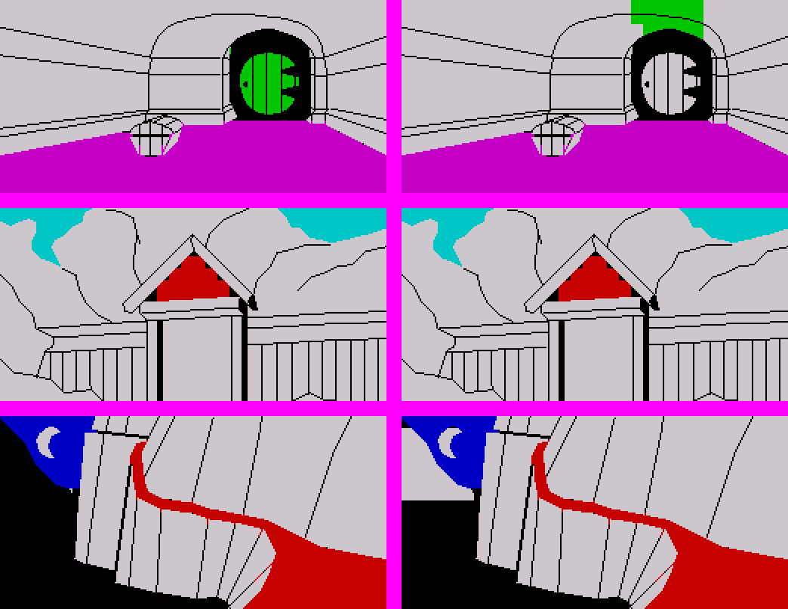
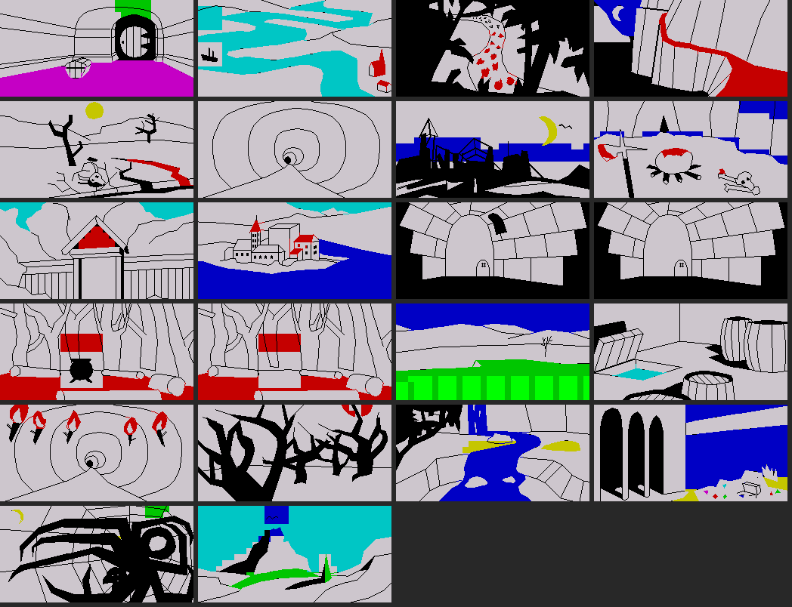

Mugsy and The Hobbit
Mugsy's picture engine is not new. It is a modified copy of the one in The Hobbit (Melbourne House, 1982), written two years earlier. This page records how the two compare, from a routine-by-routine comparison of the code and from running each game's drawing routines on the other's picture data in the Z80 simulator. The Hobbit side comes from a separate disassembly of that game (its routine addresses are written in hex below and are not linked from here).
In short: the command format, the interpreter, the line drawer, the attribute painting and the flood fill are the same code, adapted. All 22 of The Hobbit's pictures draw pixel for pixel identically in Mugsy's engine. The reverse does not work, because Mugsy added a command and a bigger drawing area.
Routine by routine
| Job | The Hobbit | Mugsy | Instructions the same | Notes |
|---|---|---|---|---|
| Picture interpreter | $8985 | 31247 | 97% of The Hobbit's, 84% of Mugsy's | Same registers and same order of tests. Mugsy adds command 16 and drops the header and the dark-room check. |
| Line drawer | $8B2F | 31917 | 89% / 74% | Same stepped-slope algorithm. Mugsy swaps the saves of HL and BC for calls into its own pixel code. |
| Attribute-cell movers | $8AD3-$8B08 | 31755-31822 | 100% / 83% | Move one cell up, down, left or right in the attribute file. Mugsy adds range checks. |
| Attribute-paint command | inside $8985 | inside 31247 | essentially identical | Including the trick of flipping the ink with XOR 56 when it would equal the new paper. |
| Flood fill | $8A4F | 31525 | 75% / 34% | Same scan-line algorithm with seeds on the stack and above/below flags. Mugsy adds a fast path that fills a whole empty byte at once. |
| Plot a pixel with ink | $8B93 | 32034 | 53% / 68% | Same idea (set the pixel, then set the cell's ink). The Hobbit keeps only the paper and swaps the ink if it equals the paper; Mugsy keeps paper, bright and flash and ORs the ink in. |
| Coordinates to screen address | $8BBC | 32066 | 23% / 17% | Different. The Hobbit computes the address by hand from 127-y; Mugsy uses 175-y and the ROM's PIXEL-ADD routine, and also has an inverse routine at 32084. |
| Start a picture | $8BE9 | 31218 | different | The Hobbit clears the top 128 rows and fills the attributes from two header bytes; Mugsy clears the whole screen and its pictures have no header. |
The command format
Both engines start with the pen at (127,63), with D as x and E as y measured upwards from the bottom, and both read the same commands:
| Command byte | Meaning | In The Hobbit | In Mugsy |
|---|---|---|---|
| 0 | end of picture | yes | yes |
| 8, x, y | move the pen | yes | yes |
| 16, ... | bitmap block | no | yes (Mugsy's addition) |
| bit 7 set | line: direction, slope and length in two bytes | yes | yes, same decoding |
| %01000ccc, x, y | flood fill with ink ccc | yes | yes |
| %00100ccc, address, runs, 255 | paint attribute cells with paper ccc | yes | yes |
Anything else is ignored by both. The Hobbit's pictures also start with two bytes (border colour and the picture area's colours), which its engine consumes and Mugsy's does not, so a Hobbit picture is fed to Mugsy's engine two bytes in.
Test 1: Mugsy's engine drawing The Hobbit's pictures
Each of the 22 pictures in The Hobbit was drawn twice in the simulator, once by The Hobbit's own routine ($8985) and once by 31247 with the picture data copied into Mugsy's memory. Mugsy's engine draws the picture 48 rows lower (its y is 175-E where The Hobbit's is 127-E), so the two screens were compared band against band. The Hobbit's fills use the top edge of its 128-row picture area as a boundary; on Mugsy's taller screen that edge is open, so the fills leak upwards. With a solid line along the top edge of the band, which stands in for the edge, all 22 pictures matched exactly: 0 differing pixels out of about 242,000. Without it 12 matched and the others were swamped by leaking fills.

Left: The Hobbit's own engine. Right: Mugsy's engine, drawing the same picture data. Rooms 1, 24 and 11. All 22 pictures as drawn by Mugsy's engine:

Mugsy's engine is also much quicker: on the same pictures it needed between a third and a ninth as many frames as The Hobbit's (38 against 337 for the first one), mostly because of the whole-byte fast path in the fill.
Test 2: The Hobbit's engine drawing Mugsy's pictures
This does not work. Mugsy's pictures use the full 176 rows, and The Hobbit's engine has only 128, so coordinates above that wrap. Five of Mugsy's seven command-list pictures also use the bitmap-block command, which The Hobbit's engine does not know: it skips the command byte and then reads the bitmap data as drawing commands. Six of the seven had not finished after 4000 frames (about 80 seconds of Spectrum time, against 55-86 frames in Mugsy); whether they are stuck or merely very slow was not established. The seventh finished but differed in 28% of its pixels. So The Hobbit's format is a subset of Mugsy's, not the other way round.
Other shared code
A whole-program match of the two games, ignoring addresses, found a few more long runs of identical instructions outside the picture code, all of them in text handling and random numbers. These matches are by instruction pattern only; the routines have not been read side by side:
| Job | The Hobbit | Mugsy |
|---|---|---|
| Message interpreter (bytecode text with dictionary references) | $72D4 | around 29458-29592 |
| Print an abbreviated dictionary word | $748A | around 29907 |
| Print a dictionary word | $74B8 | around 29928-30008 |
| Random number in a range | $9BFD | 30026 |
Mugsy's other picture format (the compressed bit-stream pictures drawn by 32126), its bytecode VM and its game logic have nothing corresponding in The Hobbit.
The test scripts are in the tools folder: hobbit_cmp.py (routine comparison), hobbit_ngram.py (whole-program matching), hobbit_behav.py (the simulator harness), hobbit_test_mugsy_engine.py and hobbit_test_hobbit_engine.py. They need a Hobbit disassembly assembled to a binary at /tmp/hob/hobbit.bin, which is not part of this package.